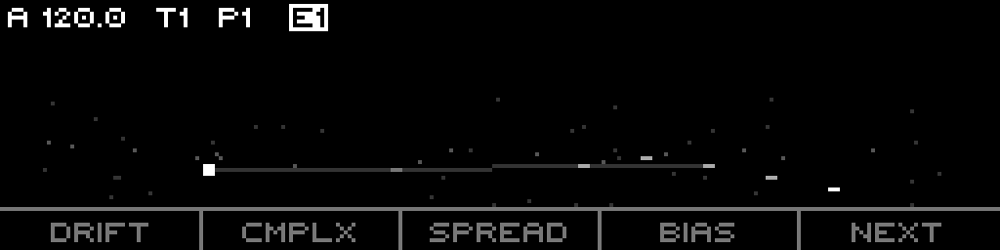
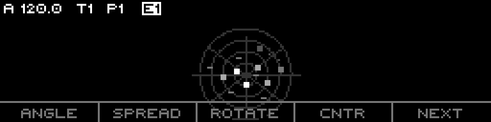

Burst events: Multiple concentric ripples from same origin
Newest event: Bright center dot with crosshair (like current walker)
Design Notes
This concept is the most evolutionarily similar to the current LIVE page design. It keeps the Marbles bell curve haze as "water depth" while making the event visualization more poetic. The ripple metaphor naturally suggests:
Older events = larger, fainter ripples
Bursts = overlapping wave patterns
Slide/legato = wake trails between ripples
Concept 2: Star Drift
Cosmic MetaphorConstellations
Inspired by: norns constellations.lua (star-field density sequencer)

Visual Language
Background: Cosmic dust field (dim random points)
Events: Stars born at the RIGHT edge when a gate fires
Drift: Stars drift LEFTWARD across viewport as they age
Vertical position: Pitch (CV value)
Brightness: Recency (newest = brightest)
Size: Gate length (longer gate = larger star)
Burst events: Tight star clusters
Constellation lines: Faint connections between same-pitch stars
Newest event: Bright square with four-pointed "twinkle" markers
Design Notes
The constellations metaphor brings a uniquely musical quality:
Pitch relationships become visible as constellation patterns
The "drift" implies the passage of time in a very organic way
Complexity can control star field density
Spread can control the "universe" vertical height
Naturally suggests loop/repeat as "stable constellations"
Concept 3: Spiral Rotation
Golden RatioCyclic Pattern
Inspired by: norns spirals.lua (spiral point sequencer)

Visual Language
Layout: Golden-ratio spiral centered in viewport
Guide rings: Concentric circles + 8 radial rays
Newest events: Near the CENTER
Older events: Spiral OUTWARD
Angle: Sequence position / timing in cycle
Radius: Age / recency (but compressed due to golden ratio)
Burst events: Satellite points orbiting main event
Newest event: Bright square with crosshair
Design Notes
The spiral metaphor is the most visually distinctive:
Golden ratio (phi = 1.618) creates naturally pleasing proportions
Each turn = ~1.618x larger, so events pack densely yet readably
Angle naturally encodes "where in the pattern"
The spiral form inherently suggests cycling, repetition, continuity
Unique visual signature compared to typical linear sequencer views
Vertical compression (0.6x) keeps the spiral within the narrow OLED aspect ratio